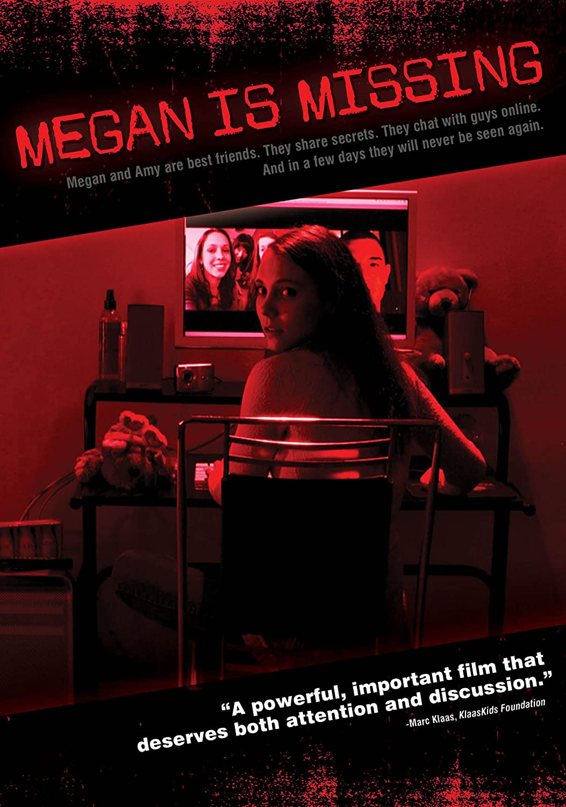
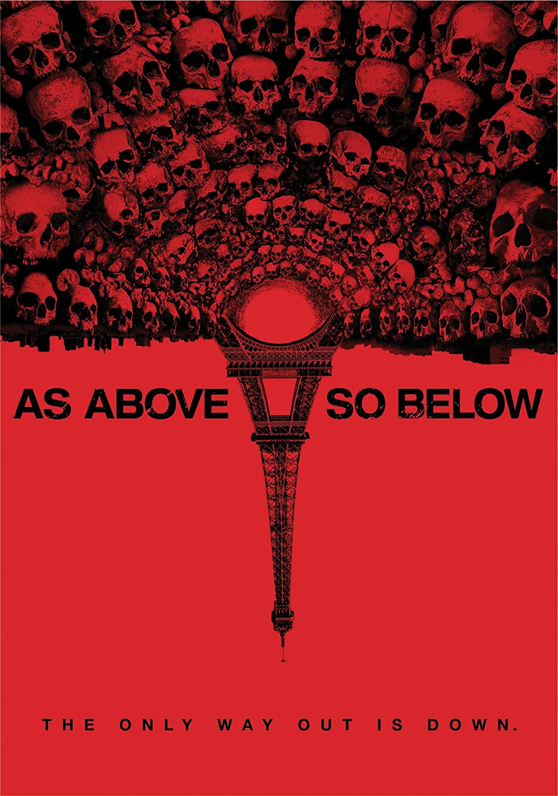
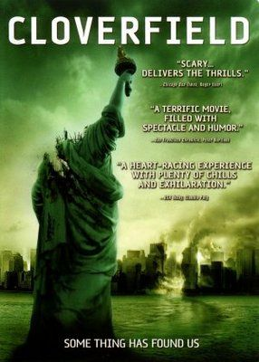
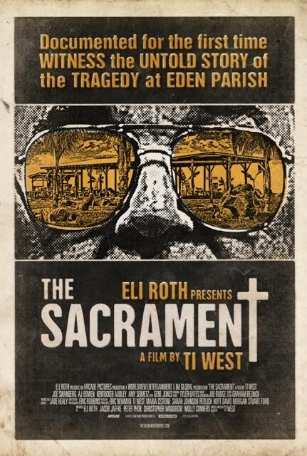
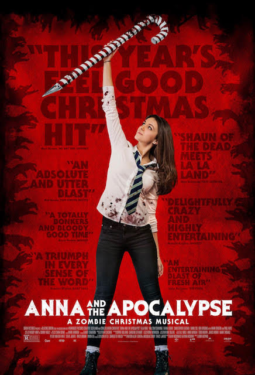

![[REC] Movie Poster](posters2/rec.jpg)

(Part 3 is my favorite)

Deborah Logan

October Built
The Rise of
Leslie Vernon


WARNING:
Extremely Graphic
When you think of Found Footage films, what's the first thing you think of? For many, it may be The Blair Witch Project or Paranormal Activity. These of course are some of the better known films from the subgenre.
I see alot of posts on social media asking for suggestions on what to watch. Alot of times, the poster will state that they feel like they've seen every horror movie on Netflix, Hulu, Prime, etc. However, if you're a fan of Found Footage films, then the possiblites seem nearly endless. Yes, some are definitely better than others. But fear not! I've done the dirty work for you, and had a hell of a time doing it.
|
|
|||
| [REC] | The Blair Witch Project | Hell House LLC | Lake Mungo | Paranormal Activity Series (Part 3 is my favorite) |
|
 | |||
| Host | The Taking of Deborah Logan |
Blackwell Ghostt | Grave Encounters | Megan Is Missing |
|
||||
| The Houses October Built |
Behind The Mask: The Rise of Leslie Vernon |
Poughkeepsie Tapes | Creep | The Gallows |
|
|
 | ||
| Unfriended | The Den | One Cut of The Dead | As Above, So Below | V/H/S |
|  |  | |||
| The Visit | Cloverfield | Butterfly Kisses | The Sacrament | Cannibal Holocaust WARNING: Extremely Graphic |
Ever since I was a child, zombies have been my favorite genre of horror movie. My favorite is Dawn of the Dead from 1978. But, I’ll admit, sometimes it seems it’s the same story over and over. Not that I’m complaining, but I like originality. Lately there seems to be an influx of zombie movies with a new take on the genre. I thought I’d compile a list of some of the best I’ve seen lately that you may not be familiar.

The Night Eats The World: This movie came out and focuses on a loner trying to wait out the zombie infestation. A totally new spin. It was interesting to see how he handles the isolation. Definitely worth checking out.
It Stains the Sand Red: A zombie apocalypse is chased across the dessert after a series of mistakes. I enjoyed this one a lot. The lead actress did an amazing job.
The Cured: This movie came out in 2017 and was on my radar but I never saw it. Lately I stumbled across it on a streaming service. What do we do with zombies if they can be cured? Totally new spin. It stars Ellen Page and she gives another underrated performance.
Anna and the Apocalypse: A musical with zombies? Yes please. Believe it or not, the soundtrack is really good.
Wyrmwood: Road of The Dead: A New Zealand zombie fest that is non stop insanity from the beginning to end. Watch it. You won’t regret it.

Maggie:Did you know Arnold Schwarzenegger made a zombie movie? Now you do. His performance as a father during the epidemic is heartbreaking to watch. Was way better than I expected.
If you're anything like me, then you probably follow at least a few horror groups on social media sites like Instagram, Twitter or Facebook. These groups can be a great opportunity to meet other horror fans, discuss the movies you love or talk about upcoming films. However, I've noticed a growing trend lately. It seems like more and more of these groups are becoming infiltrated with "haters" and "elitists" amongst other things.
First off, in case you haven't noticed yet, I LOVE Horror. I love everything about the genre. Pre-pandemic, you would find me at every Thursday night showing whenever a horror movie was released. Even if it didn't look like something I would particularly enjoy, I would go, if for no other reason, to support the genre. Horror has helped me through so many ups and downs in my lifetime. It was my escape when I was younger, and is still my escape now, after a long day at work. I have met many great people who feel the same way.
My question is, why are some people who claim to love horror, always the first ones to put it down? I'm sure you all are well aware about the issues that have been plaguing the genre and thankfully have brought to light over the past two years. Instead of me trying to explain those issues, I implore you to check out the very informative article about those issues here.
I want to talk about the trolls, ignorance and negativity that seems to be infiltrating the social media groups that I used to love. There are many variations of negative people I've seen in these groups. They're outlined below:
The "There Are No Original Movies" fan:
This couldn't be any farther from the truth. Has there been an influx of remakes, re-imaginings and sequels over the past 10 years? Absolutely. But there are also a TON of original horror movies out. Between Shudder, Tubi, Netflix, Hulu and Amazon Prime to name a few, there are alot of options to watch original horror films, or discover a gem you may have missed!
The "(Insert Movie) Sucks!" review with no explanation fan:If you belong to any horror groups, or any movie groups in fact, I'm sure you've seen this post like this before. No matter how perfect a film may be in most people's eyes, someone will always hate it. That's not the problem. The problem I have are the people that say it without any explanation of why they don't like the film. Everyone is entitled to their opinion, but it would be nice to know why they don't like a movie.
The "I'm 20 minutes into the movie and it's boring" fan In my opinion, movies are meant to be an experience. That's why I admire places like the Alamo Drafthouse, that will have you escorted from the theater if you're on your phone once the movie has started. It is a major pet peeve of mine when I see this. When you're getting engrossed in a film, there is nothing more distracting then when the bright light of someones cell phone comes on. Also, how invested can a person be if they feel the need to stop it after 20 minutes or so to ask a group if they should keep watching it. If a person can't devote the required 85+ minutes to the film they're trying to watch, it may be a better idea to watch something shorter.
What do you think? I want to make It's A Horroble Life a fun place for all horror fans to speak their mind. One where you're encouraged to voice your opinion. We hope to hear from you!